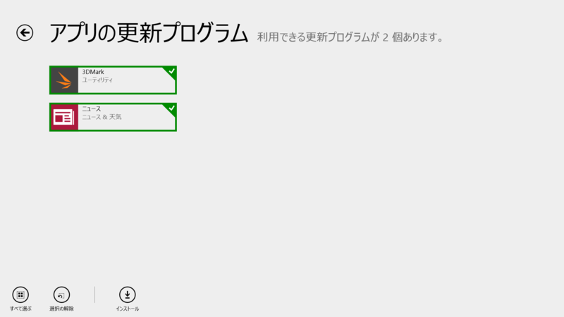
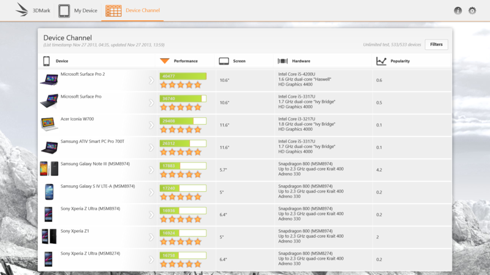
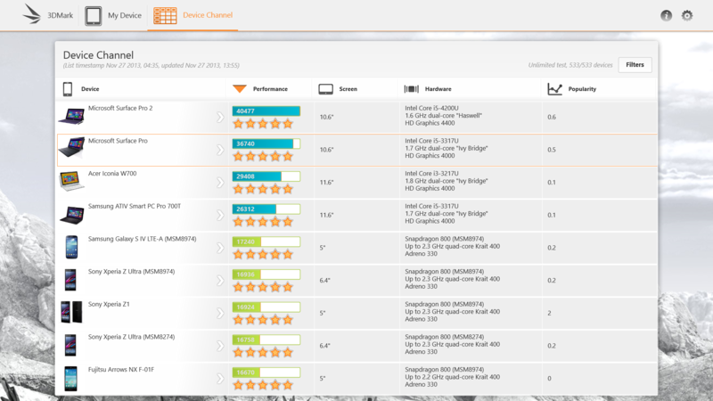
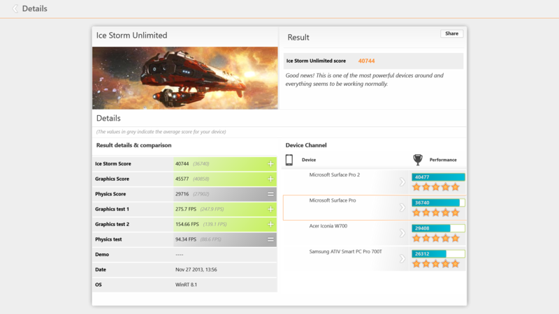

3DMark 1.2.42.0、ニュース 3.0.1.321
公開日：

3DMark 1.1.11.4749 → 1.2.42.0
In the latest release, you can compare your score with Windows 8 tablets in the Device Channel.
People rely on Futuremark benchmarks to produce accurate and unbiased results. Devices with suspicious benchmarks scores have been delisted from the Device Channel. You should not use scores from delisted devices to compare devices.
変更点はよくわからなかったが――

旧バージョン。

新バージョン。まさか Windows 8.x タブレット（非 ARM）が色分けされただけなのだろうか。ベンチマークの3DMark、サムスンやHTCの一部端末を対象から除外。不正な結果操作の疑い - Engadget Japanese が関係するのかどうかは知らない。

あと気になったのだけど、Surface Pro 1 なのに OS が Windows RT 8.1 って判定された。